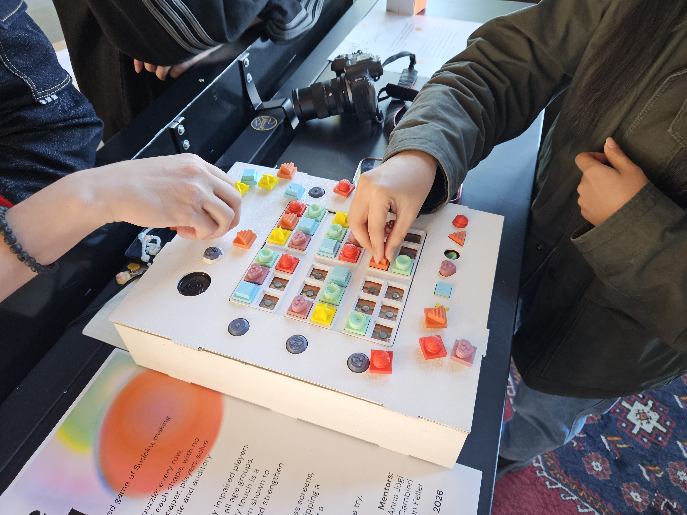
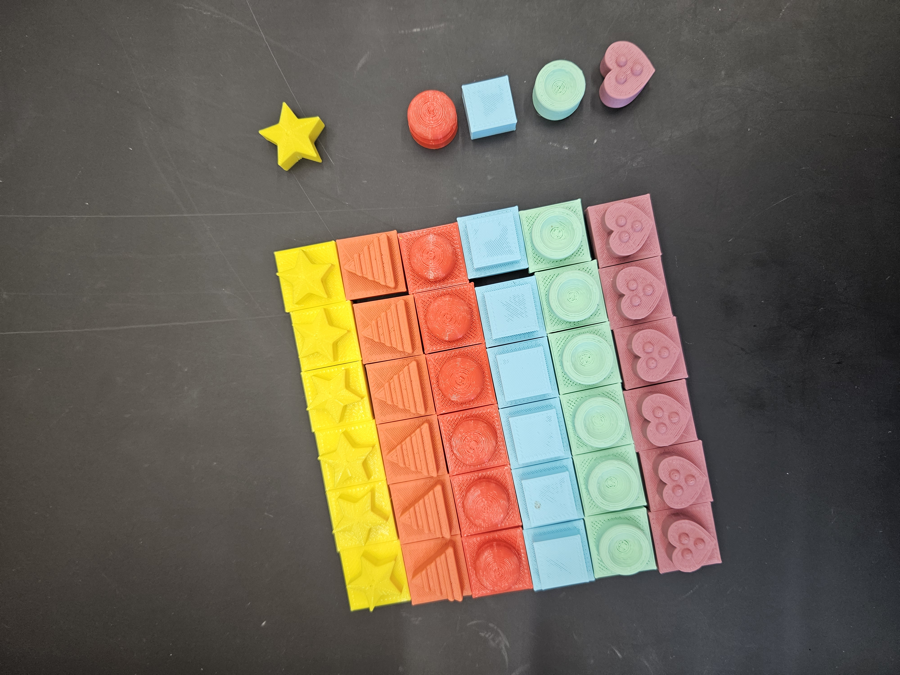
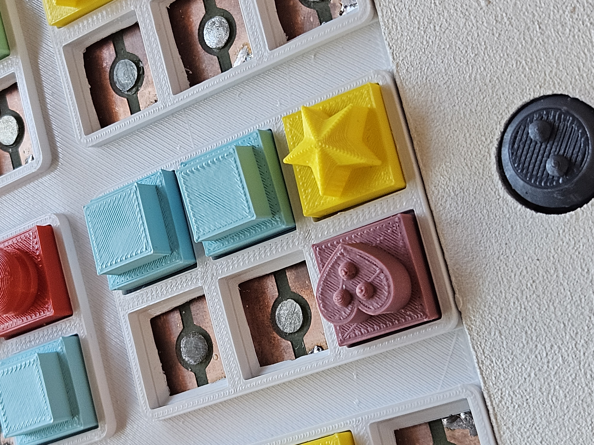
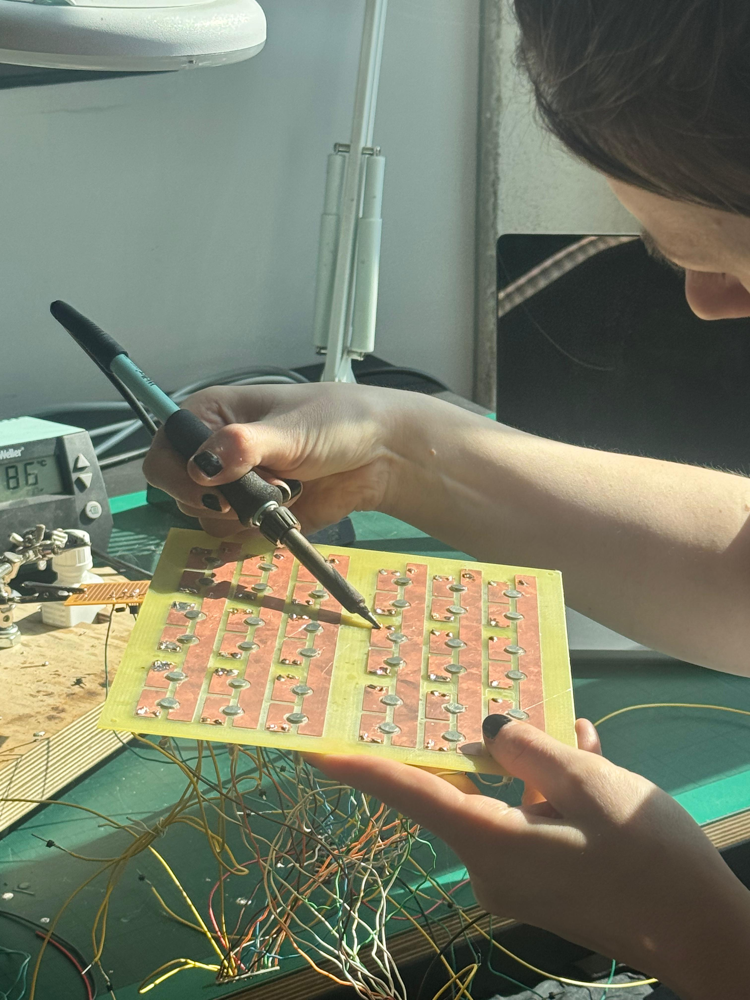
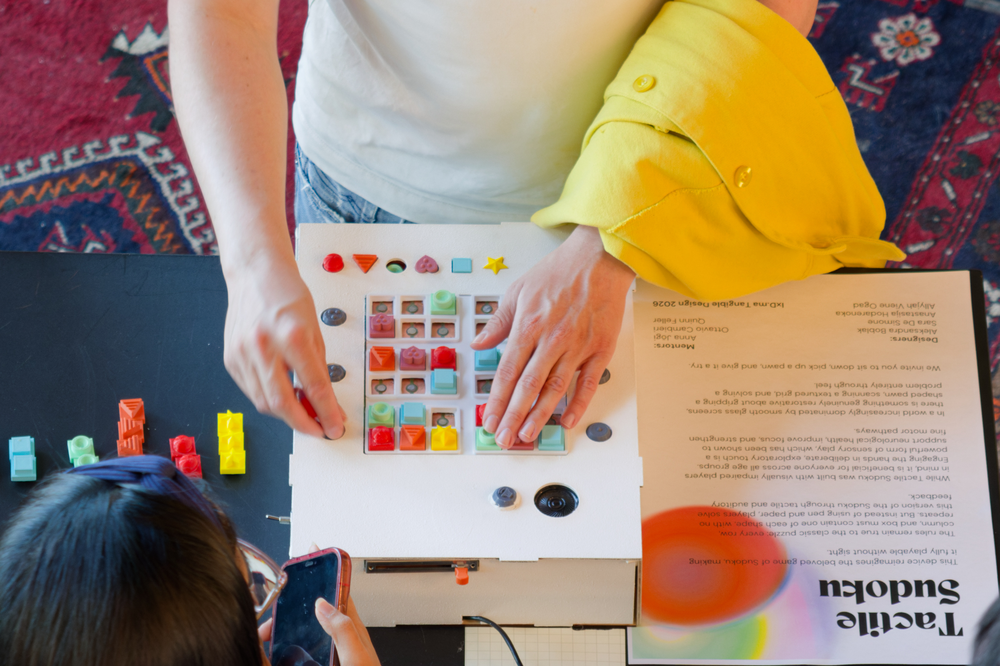

Tactile Sudoku
03
A physical 6×6 Sudoku — shaped, textured pieces and a copper sensing board built from scratch with my team — so the game works when vision isn’t the primary sense.
CONTEXT
Sudoku is a popular puzzle game, but traditionally relies on your vision to solve it. Tactile adaptations exist, but are still thin on flexibility and feedback; screen readers or a helper change the quiet, solitary rhythm that makes the game what it is.
GOAL
Our goal was to rebuild the puzzle for touch, so the game can be played without vision.

Tactile intent
A physical 6×6 board players with low vision can enjoy on their own.
Six shapes replace numbers, each with its own surface so it reads by touch alone: a pointed star, a flat square, a heart with three raised dots, a concave bowl, a smooth sphere, and a ridged triangle. Textured navigation buttons help track position on the grid. Vibration confirms placements and flags issues; optional sound gives an extra solving clue.
The build is the project: 3D-printed pawns, a copper-clad playing field, soldered traces, and firmware that has to read reliably in the real room — not only on screen.
KEY IDEA
Accessible Sudoku rebuilt for touch, where tactile play deepens its calm, grounding feel.
More about the process
Prototyping
Fast iteration before PCB and sensing.
Air-dry clay and a simple grid to test whether the idea was worth building in copper and code:
- whether six shapes were distinguishable
- whether the layout felt playable by touch
The pawns evolved through multiple passes:
- texture mattered as much as shape
- size affected how quickly pieces could be recognized
Once the set worked by touch, the final pieces moved to 3D print for crisp, repeatable shapes.


Online simulation
A lightweight browser simulation to check rules and feedback away from hardware.
Ran alongside the physical prototype so logic could evolve without waiting on the board.
Fabrication
A laser-cut box with a 3D-printed top plate for clean cell spacing and a copper-clad field at the surface.
Soldered paths meet each pawn at its cell, and magnets seat the pieces so reads stay consistent as they lift and return. It was my first time soldering — and my first physical gadget — so the bench was also where I learned the craft.
When some pawns weren’t quite touching the board, the nail contacts were sitting too tall; I filed down the seam behind each nail head until every piece made solid contact.


Electronics
Each pawn carries a resistor; the wired board reads them as six distinct “digits” and knows which cell they sit in.
Under the surface it’s a dense harness: 36 wires for the cells and six more for the columns, plus lines for seven latching buttons, a potentiometer, an on/off toggle, a speaker, and a DFPlayer Mini sound module — a lot to keep straight for a first electronics build.
- Six textured shapes — read by the hand.
- Six resistor values — read by the board.
- Magnets and a 3D-printed inlay — a secure, satisfying click.
I wrote the requirements doc, then vibe-coded the firmware with Cursor Agent and tested it end to end — my first serious project built this way.
Playtesting
Bringing the board into the room changed what we built next.
Playing by touch is genuinely hard. Sighted players lean on vision, and this board asks for a different skill — most were happy to finish a single box, and plenty had never played Sudoku at all.
What we learned:
- Added a sound on placement, so players can learn which shape maps to which tone.
- Sighted visitors — kids and adults — were eager to try, often closing their eyes to take on the challenge.
- Completing even one box felt like a real win, which reset our sense of pace.
Shown at the expo, the finished board held up to real play — and more than a few visitors said it could be a real product.
